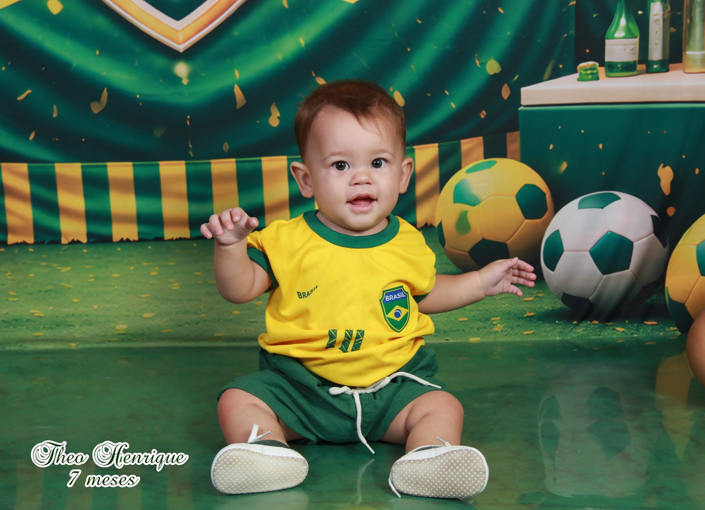
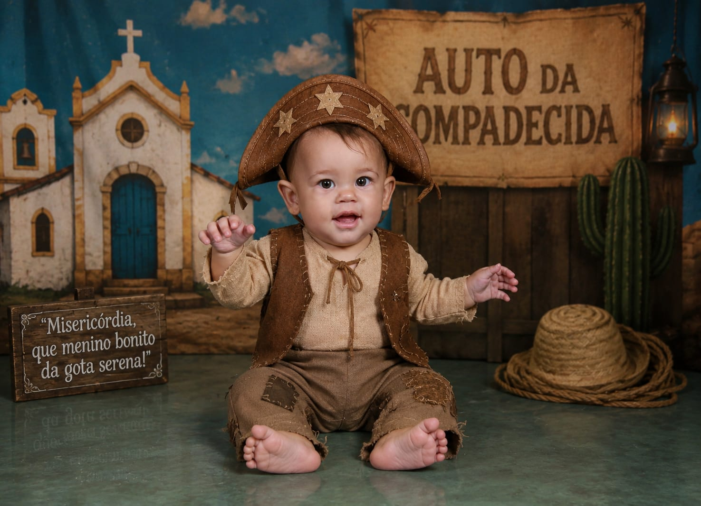

A comissão técnica do Theo convoca você para entrar em campo!
🏆 SELEÇÃO DO THEO 🏆
8 MESES
🗓️ 15 de Junho
🕒 Horário: 18:30
🏟️ Estádio: casa da vovó

"Misericórdia, que menino bonito da gota serena!"
Valha-me Nossa Senhora! O pequeno cangaceiro Theo está completando oito meses de vivência.
Chicó mandou avisar: quem faltar vai se ver com o Major Antônio Morais!
A taça do mundo é nossa e o tempero do sertão também!
TRAJE SUGERIDO:
Camisa do Brasil ou Chapéu de Couro!
"Vale-me meu São Jorge protetor, que o Theo é o nosso craque e o sertão é vencedor!"